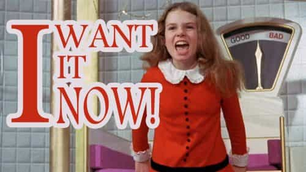
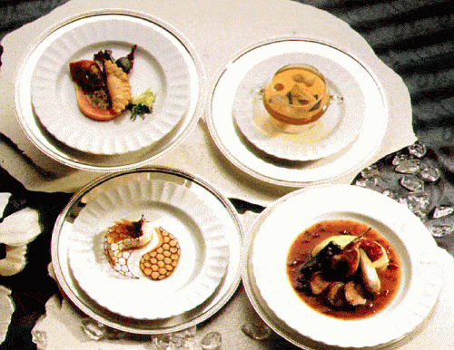
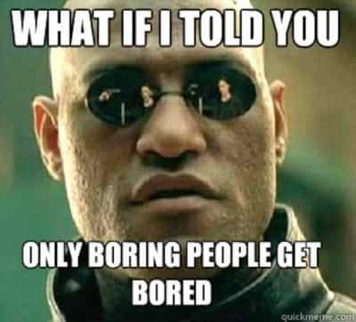

Jared is a middle-aged guy full of old-man wisdom. He's best described as a gentlemen scholar and a man among men. You can read his writing at his site: Legends of Men


There’s a pattern I’ve noticed in some of my own friends and people I’ve met and followed throughout the years. It’s a pattern that has led to their unhappiness with life. They are perpetually malcontent, even to the point of depression. And it’s something they’ve brought on themselves.

When thinking of these people I’m reminded of Veruca Salt from Willy Wonka and the Chocolate Factory. She gets everything she wants but she always wants more. Her dad always gets her more. Other people in the film comment about Veruca that she’s been spoiled rotten. That’s exactly what happens to these people I know. You likely know people who have been spoiled rotten too, or it is the source of your own malcontent.
Worst of all, and unlike Veruca Salt whose father spoiled her, these people have spoiled themselves rotten. Here are the four primary ways people do that.

You’ve probably known people who eat out most meals. When they do cook at home they make something you’d only ever eat at a fancy restaurant; eggplant risotto or quails drowned in butter or a souffle or something along those lines. Eating in this way drains your bank account but people do it just because they can because they are adults and nobody can tell them no.
There’s nothing inherently wrong with this if you can always afford it or get your way, but for most people, that’s not likely. Eating out gets expensive and cooking these foods takes time and effort and skills most don’t have. It’s hard for these people to eat something simple like a PB & J sandwich or scrambled eggs. Foods most of us just eat for energy and ease and because it’s cheap. These foodies get spoiled by their own food choices and become unable to eat a simple inexpensive meal and move on with their lives. It can become a small but potentially significant source of unhappiness which shouldn’t affect one’s happiness at all.
I know a person who traveled a lot in their twenties. They went a lot of places, met a lot of people, slept with a lot of people, and got all that insight people like Anthony Bourdain said you get from traveling. Work wasn’t life for them. Work was the area between traveling, the period of time spent saving enough funds to buy a new backpack and tent and dry rations and money for hostels. The consequences of that lifestyle weren’t felt until they were in their thirties when travel was replaced by college and work.
At that point, life was no longer happy. The adventures, which were no more than backpacking through other places and sleeping with foreigners, were gone. When they “grew up” and tried to get a regular job they were always unhappy. If it wasn’t for one reason it was for another. But the real reason for their unhappiness was the fact that they never got content with work. They never accepted the daily grind as part of life.
Most people just accept that they have to work. They might not be content with their particular job but they are content with having to bang out eight hours a day to afford the rent. When people get too used to travel and go back to a more stable life it seems too boring and they feel unhappy. They feel like they are missing out on something.

Normally on red pill/manosphere websites, we only hear about how promiscuity damages women from connecting with men, but the opposite can be true as well. When men or women have many sexual partners they can get used to a certain plethora and variety of sexual experiences and partners. Once they are used to that variety switching to something less exciting can be a challenge and source of unhappiness.
Happily married men will tell you that sex with their wives isn’t always an event. There’s not usually a date or any seduction. The husband initiates sex and the wife goes with it. The sex isn’t particularly thrilling, it’s just a good 3-8 minutes of intimacy that results in a nice climax for the man and potentially a climax for the woman. It’s no big deal.
But when people get used to seduction and picking through the weeds for a new sex partner the more mundane or routine sex life isn’t exciting. There is no thrill in it. The urge to find a new sex partner and experience more “variety” still remains. Having a long-term relationship while feeling that urge becomes a source of unhappiness, one that ultimately prevents people from connecting with the opposite sex in more meaningful ways.

The common factor here is novelty. Eating extravagant and exotic foods, traveling to extravagant and exotic places, sleeping with exotic strangers, all involves seeking out novelty for the sake of novelty. People who seek novelty or enjoy novelty as a way of life cannot be content with the mundane. That means they’ll never be happy in a stable job. They’ll never be happy in a family environment. They’ll never be content doing boring things with boring people.
Most people aren’t like this. Most people have accepted that they have to work Monday-Friday so that they can BBQ with their friends on Saturday and have a few laughs. Most people have accepted day-to-day life without much novelty and they are happier for it.
You can have novelty and be happy with the mundane aspects of life simultaneously. The two are not mutually exclusive. Novelty can very easily be had after your boring work day is over. You can travel and experience new places and eat new foods during your vacations. I don’t personally advise finding new sex partners if you already have a stable relationship. Generally speaking, life is better with a stable, faithful partner.
If you are young it is especially important you do not spoil yourself rotten. You’ll feel the effects of it later. If you’re older and already feel the unhappiness you’ll have to figure out how to accept the more mundane side of life. Accept being “normal.”
For more about the roles of men and women in the media, literature, history, and our modern culture check out Legends of Men.
Read More: 7 Reasons Why A Male Cheater Is Better Than A Female Cheater